※こちらの記事は、「Chat gpt4o」で作成したものを一部、加筆しました笑
2024.8に食べに行きました😆
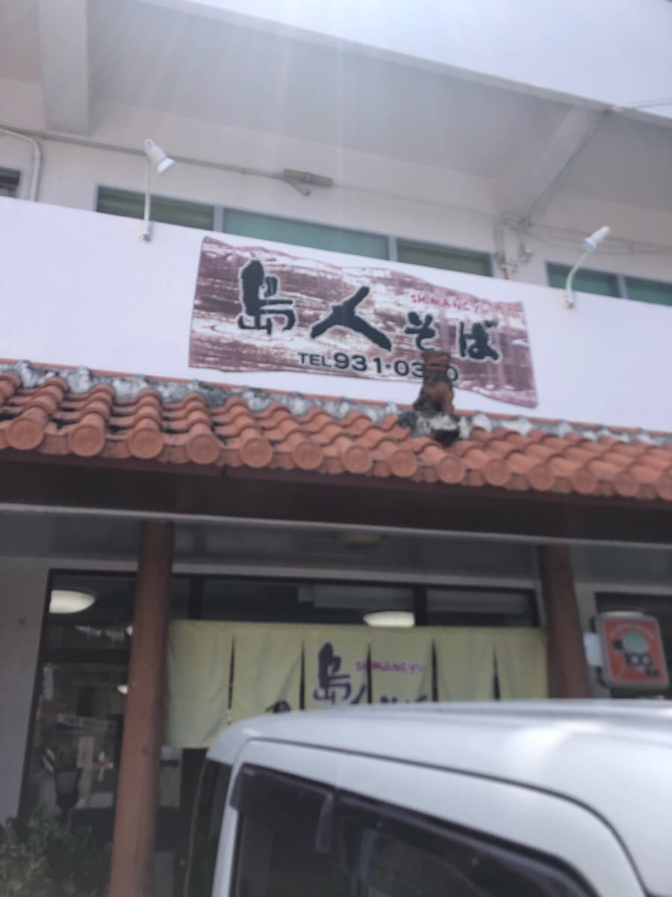
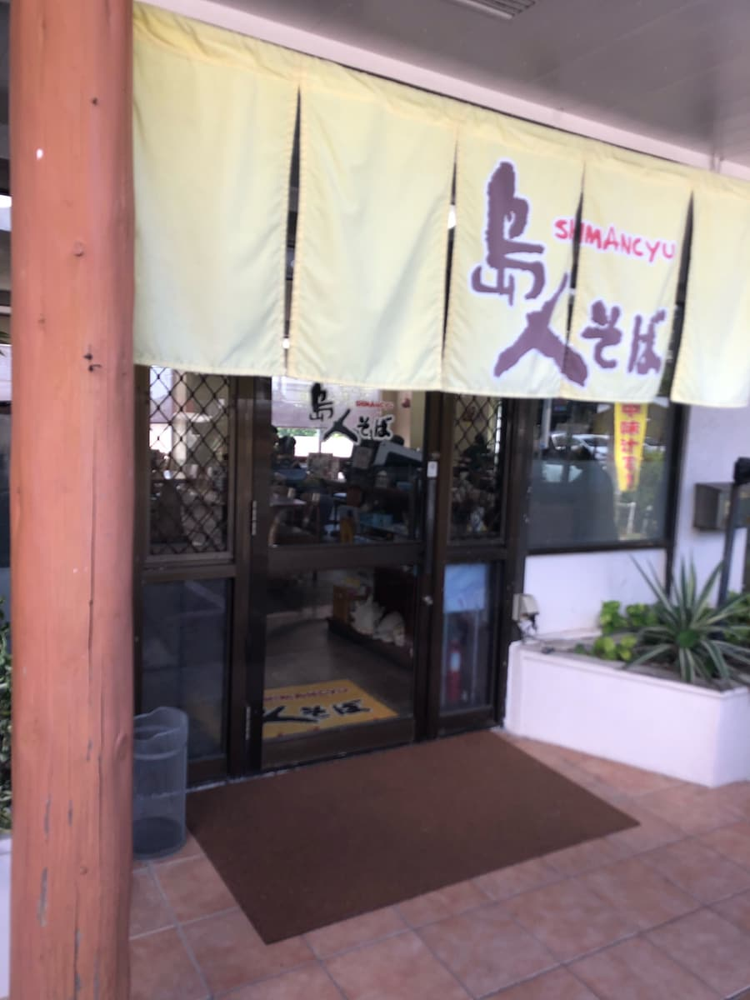
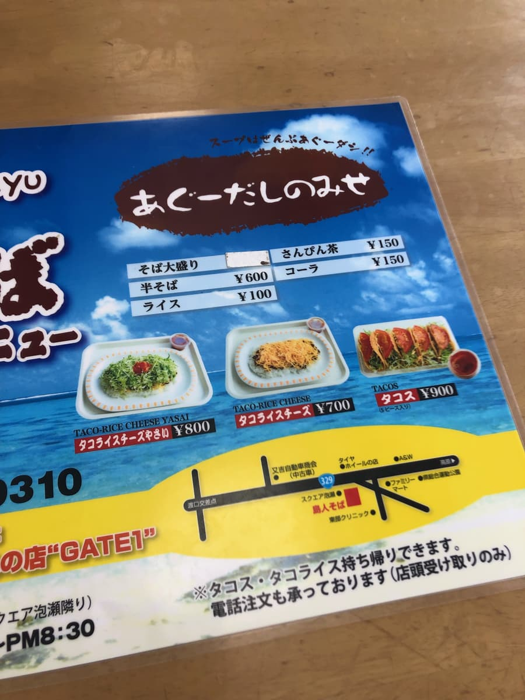
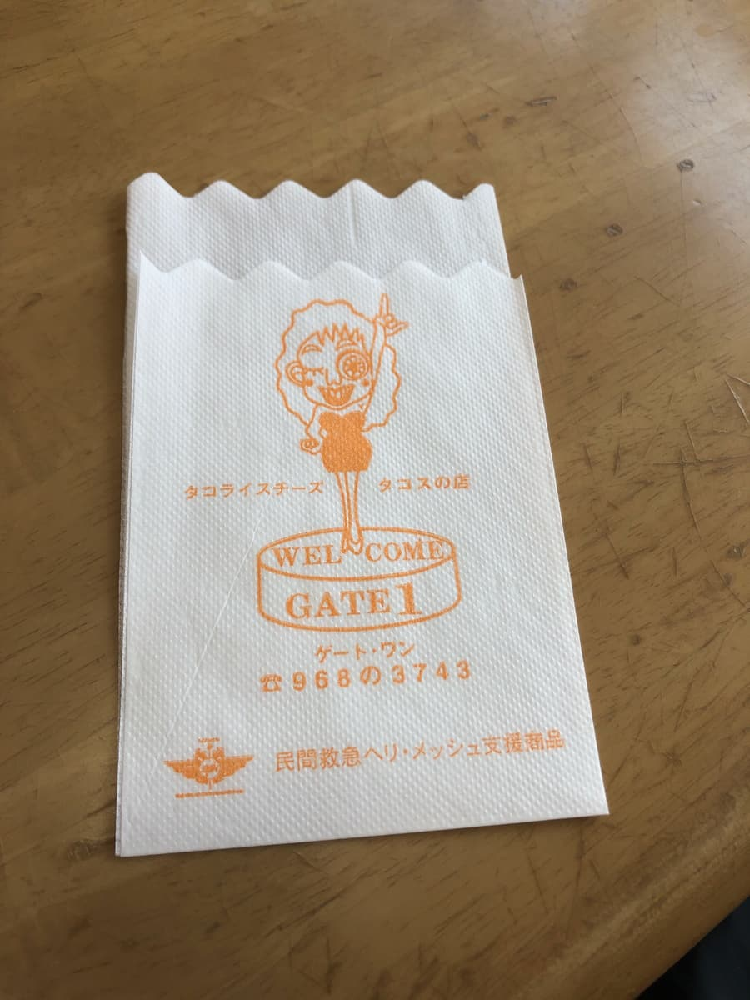
ちなみにここは、タコライスやタコスが有名な「ゲートワン」というお店の姉妹店とのことです。相変わらずノーリサーチで入ったので、初めて知りました(^0^;) タコスも有名で美味しそうと思いましたが、今回は沖縄そば全店舗制覇を目指すため「島人そば」をオーダーしました😆
さらにメニュー表には「たべあるき九州・沖縄 味100選店」というものに選ばれているようです。良く分かりませんが、期待出来ますかね😄
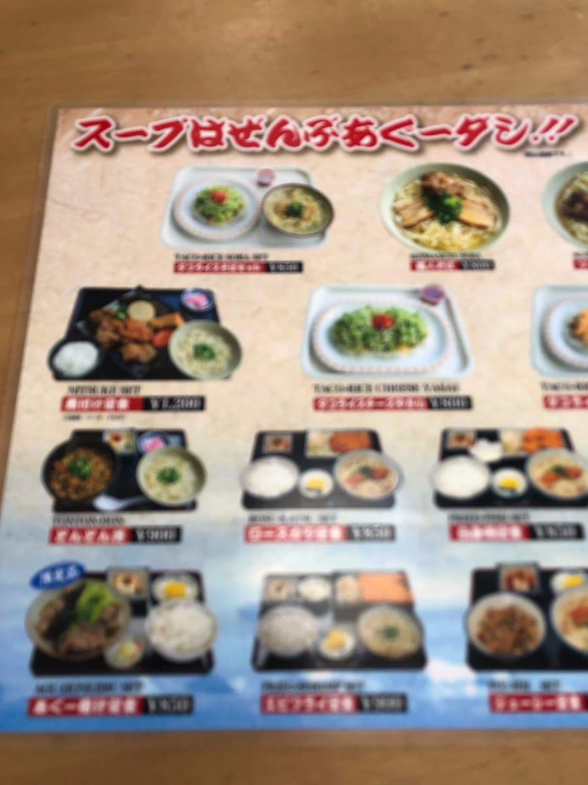
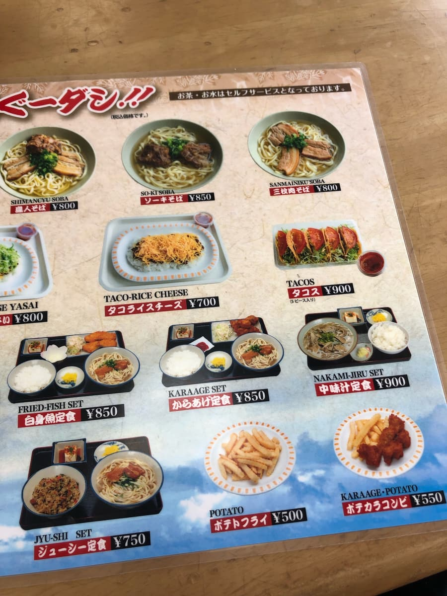
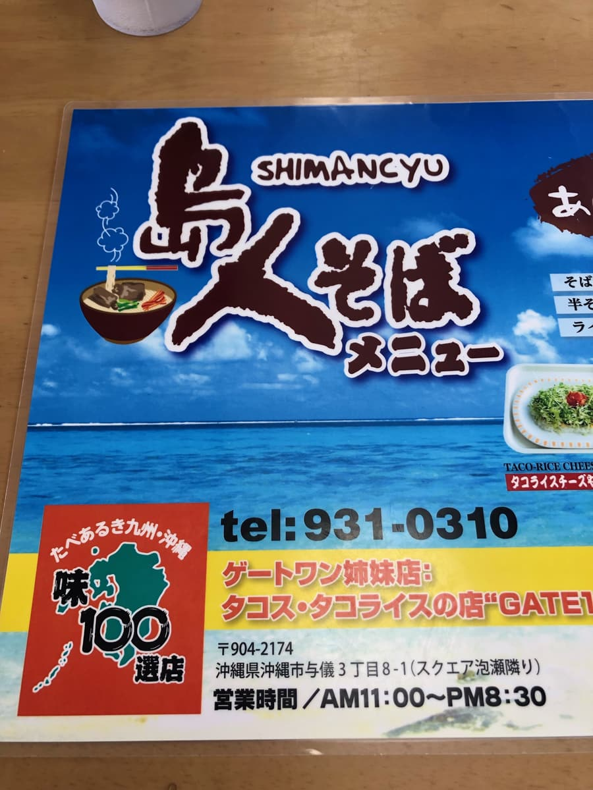
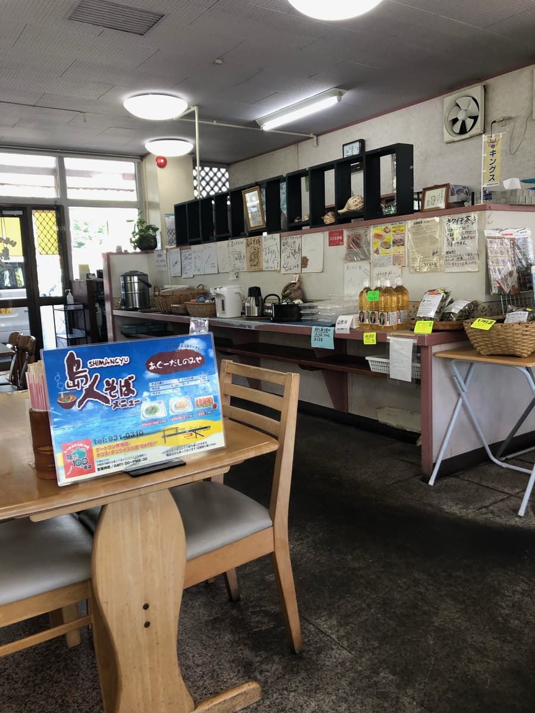
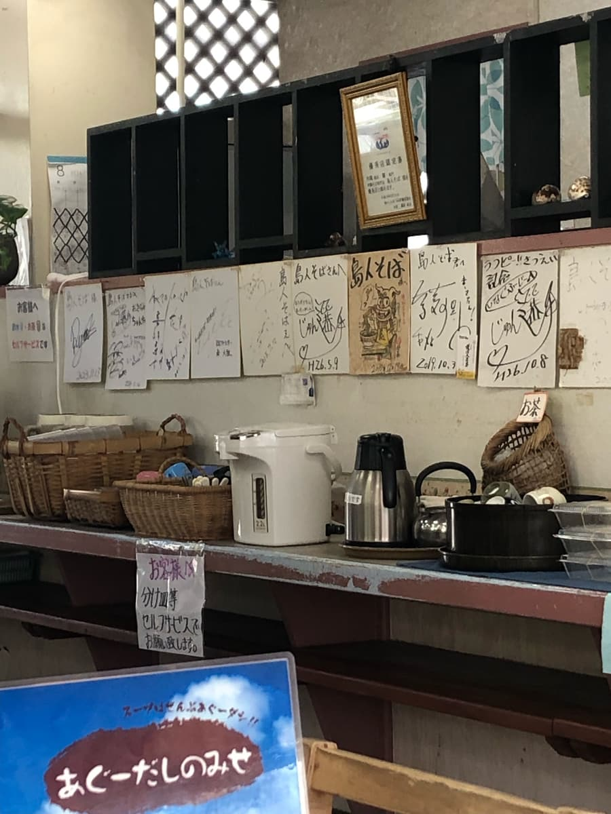
店に入ると、まずは沖縄らしい落ち着いた雰囲気が広がっています。壁には有名人のサイン色紙がずらりと並んでいて、地元の人や観光客に愛されているお店という印象。セルフサービスで水やお茶がいただけるのも、気軽で良いですね。のんびりとした空気感に包まれながら、さっそくメニューを見てみると、やっぱり目に留まるのは「島人そば」。店名と同じ名前のそば、これはもう頼むしかない！
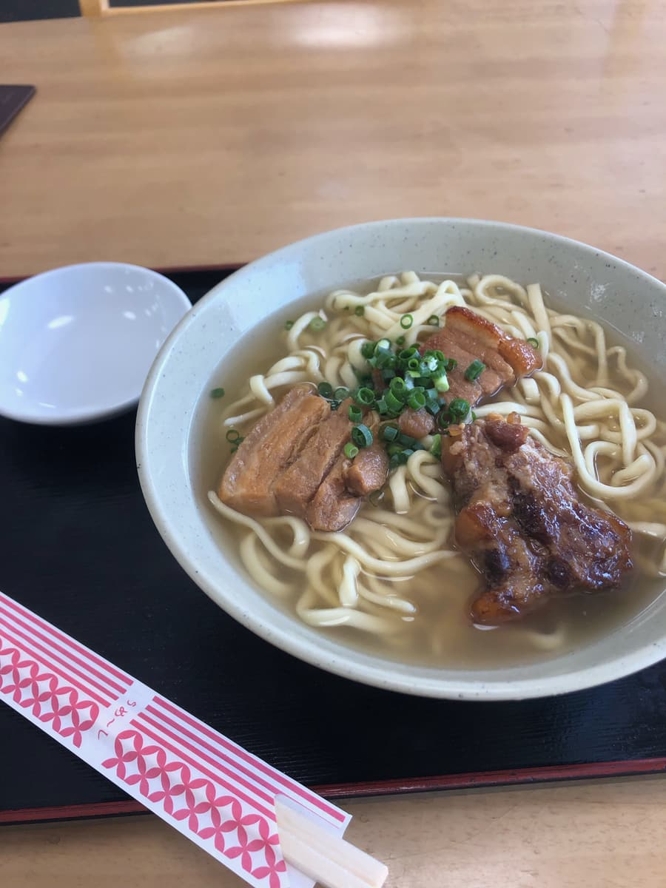
注文をしてからしばらく待つと、ついに「島人そば」が到着。大きな器に、たっぷりのスープと中太麺が食欲をそそります。「あぐー出汁」を使ったというスープは、まず一口飲んでみると、しっかりとした豚の風味が感じられますが、同時に鰹の香りも感じられる一杯ですね。
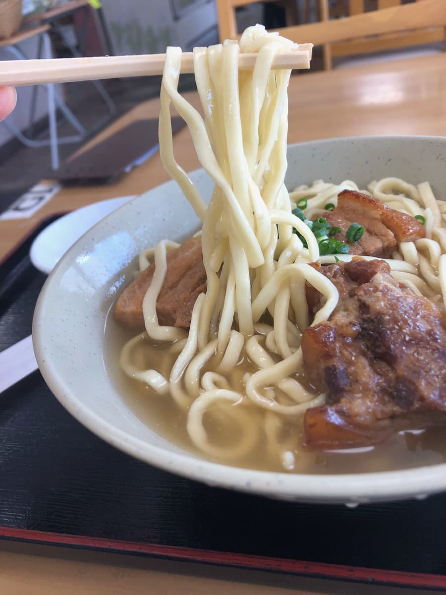
麺は中細で、柔らかめの食感が特徴的。少しコシが足りない印象もあって、もう少し噛み応えがあってもいいかな～と思いました。でも、スープと絡みやすく、飲みやすいあっさりスープにピッタリでしたね。
トッピングには、三枚肉と軟骨ソーキが乗っています。三枚肉はあっさり味。一方、軟骨ソーキもあっさり味で、ちょっと硬めで、筋っぽさが残っています。これは好みが分かれるかもしれませんが、しっかりした食感を楽しみたい人には嬉しいポイントかも。もう少し柔らかい方が好みですが、この肉の噛み応えが好きな方には良いかもです。
評価（9点/15点）：全体として、「島人そば」は驚きや個性が強いわけではなく、いわゆる「普通に美味しい」そばといった印象でした。お店の営業時間は11:00～20:30までと他の沖縄そば屋の営業時間よりも長めと思います。もし沖縄市与儀に来る機会があれば、ぜひ「島人そば」に立ち寄ってみてください。次はタコスも食べてみたいですね😆
麺 ：★★★☆☆（3）
スープ：★★★☆☆（3）
具 ：★★★☆☆（3）